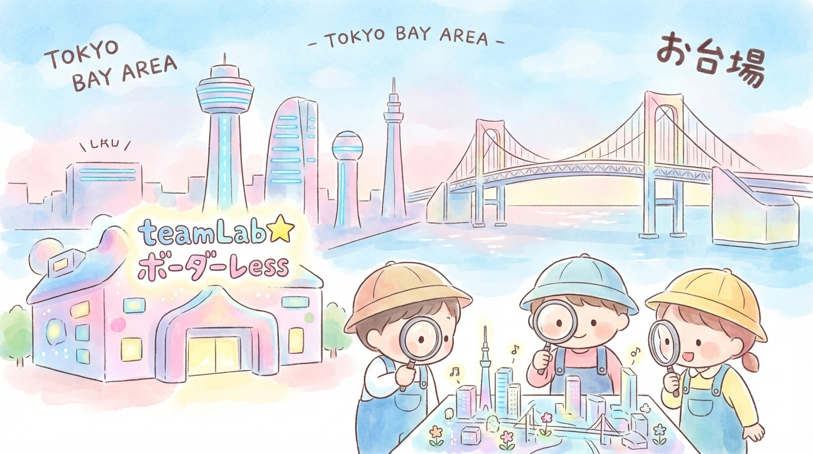
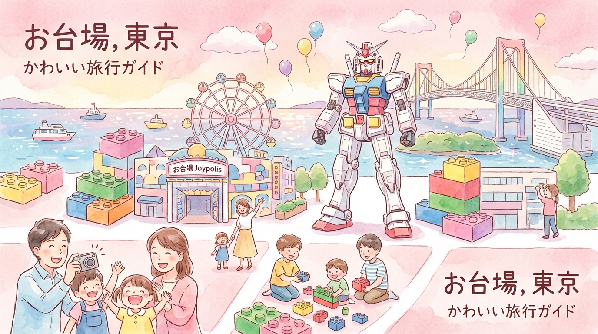
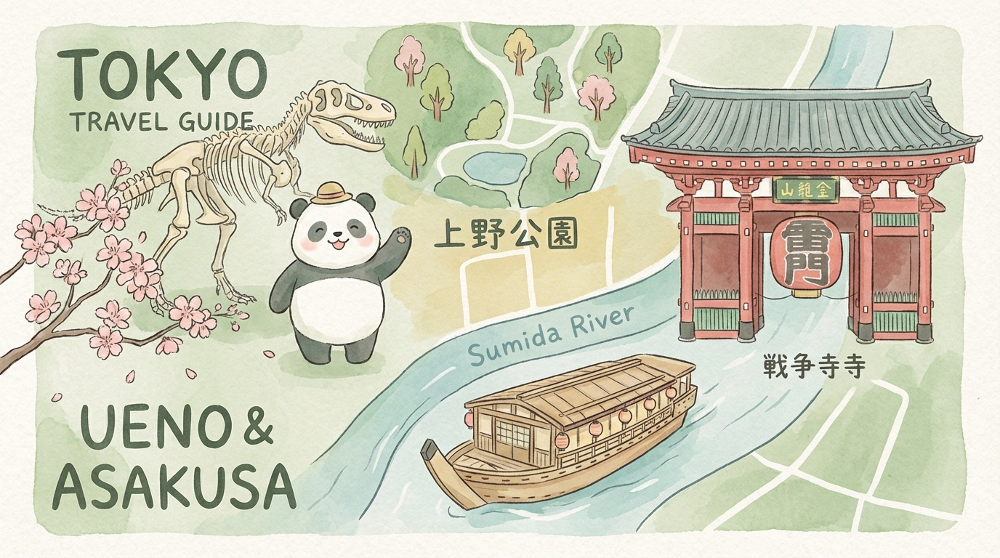
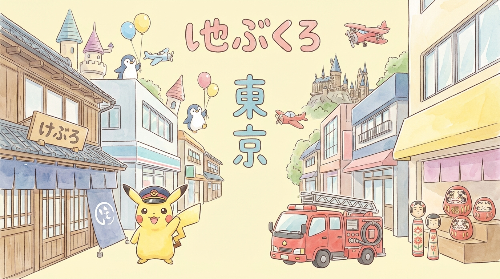
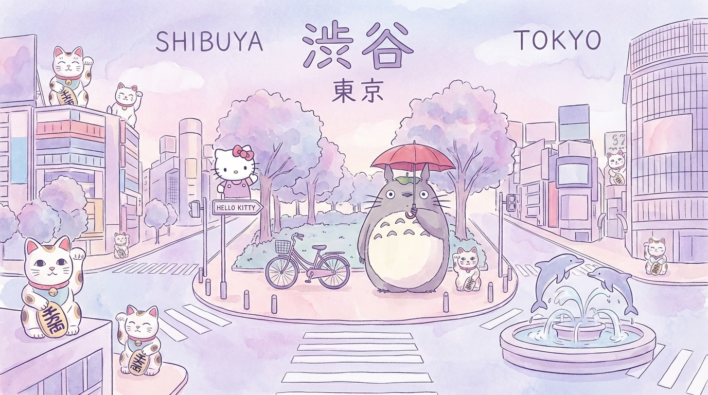
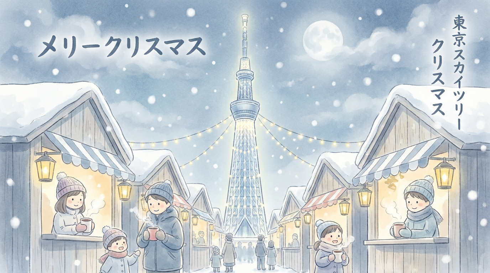
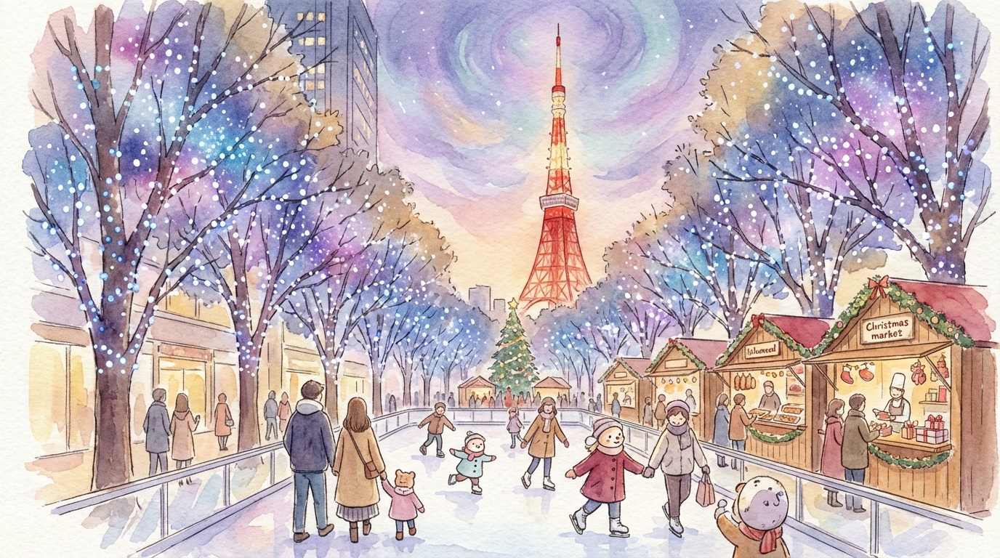
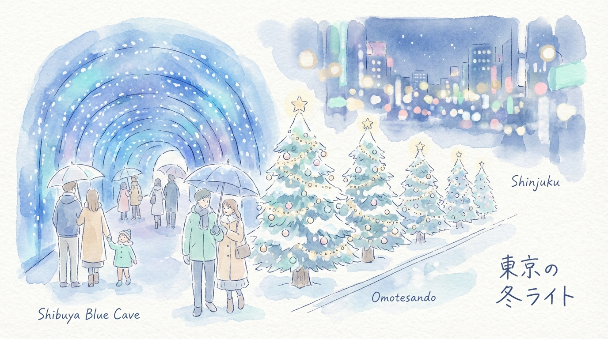
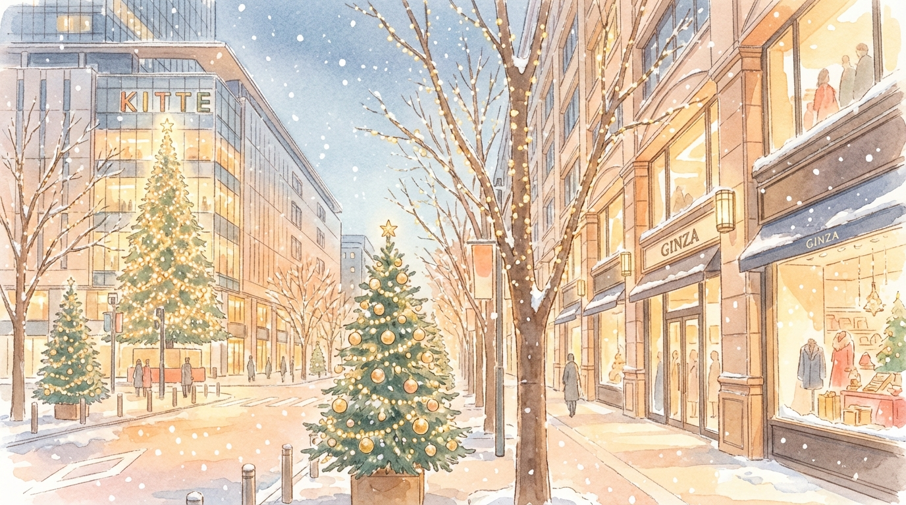
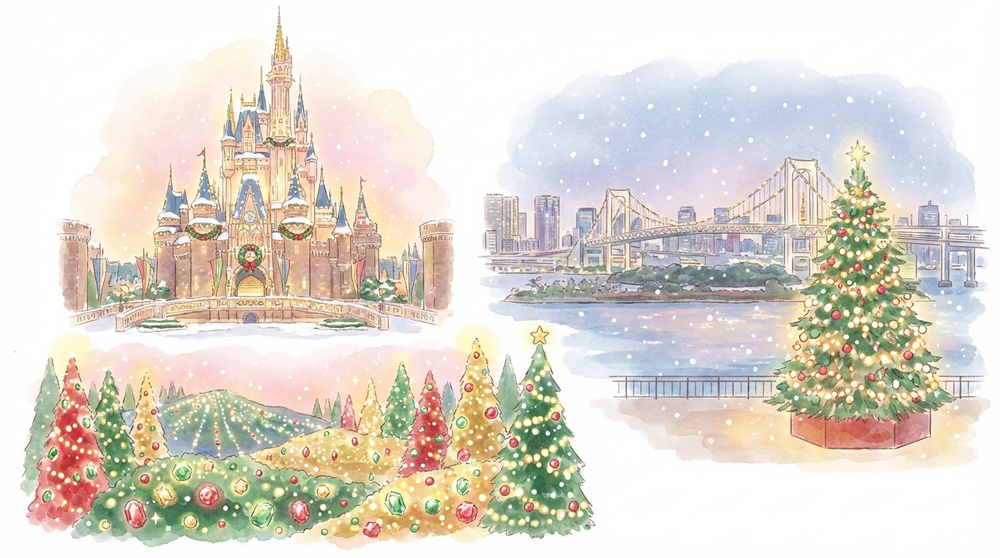

區域一：江東、墨田與有明
— 2026 新地標與科技TOKYO DREAM PARK
位於有明，由朝日電視台打造，有史上最大規模的「哆啦A夢」特展！2026/3/27 開幕。
KidZania 東京
孩子可以當消防員、機師，甚至去製作壽司，超真實的迷你城市。
teamLab Planets
赤腳入水的美術館，巨大的錦鯉水池和花海，是視覺與觸覺的震撼。
Small Worlds Tokyo
全球最大微縮模型樂園，可以看到《新世紀福音戰士》和《美少女戰士》的精緻場景。
日本科學未來館
與 ASIMO 機械人互動，探索外太空，非常適合小學以上的學童。
東京都現代美術館
後方有非常漂亮的草坪，館內常有針對兒童設計的藝術工作坊。

區域二：台場與青海
— 室內娛樂與動漫實物大獨角獸鋼彈
每天固定的變身表演，震撼力十足。
台場樂高探索中心
純室內樂園，適合 2-10 歲的孩子，大推裡面的 4D 電影。
東京 JOYPOLIS
日本最大室內主題樂園，雨天備案首選，內有超刺激的 VR 體驗。
Round 1 STADIUM
一票到底的室內運動場，包含保齡球、滑輪、射箭與各類遊戲機。
DiverCity 頂樓 Skypark
俯瞰台場海景，孩子能在那裡奔跑放電。

區域三：上野與淺草
— 歷史文化與動物上野動物園
看熊貓「真真」與「力力」的後代，日本最古老的動物園，門票極便宜。
國立科學博物館
滿屋頂的恐龍化石，甚至有巨大的藍鯨模型。
淺草屋形船體驗
全家坐船一邊吃美食一邊遊隅田川，看東京晴空塔。
淺草花屋敷
日本最古老的遊樂園，設施溫和，適合幼稚園及國小生。

區域四：池袋與新宿
— 角色中心與森林池袋寶可夢中心 Mega Tokyo
全日本最大的寶可夢中心，還有全球唯一的寶可夢外帶甜點店。
太陽城水族館
著名的「天空企鵝」，看企鵝在池袋高樓大廈間「飛行」。
東京哈利波特影城
目前全球最大的哈利波特室內設施，重現霍格華茲禮堂與九又四分之三月台。
消防博物館
免費入場，可以讓孩子換上消防服，甚至坐上真實的救援直升機。
東京玩具美術館
由舊小學改建，裡面全是木製玩具，質感極佳，適合年齡層較小的幼童。

區域五：澀谷、原宿與近郊
— 潮流與吉卜力Shibuya Sky
東京最強觀景台，在那片透明玻璃前拍親子照是必備行程。
代代木公園親子單車道
租借腳踏車，在東京都心的森林裡享受家庭時光。
三鷹之森吉卜力美術館
宮崎駿迷的聖殿，頂樓有天空之城的機械人士兵。
藤子・F・不二雄博物館
位於川崎（離東京約 40 分鐘），滿滿的哆啦A夢細節。
PokéPark KANTO
位於讀賣樂園內的全新「寶可夢戶外樂園」，2026/2/5 開幕必衝。
高輪 Gateway City
隈研吾設計的新地標，有足湯與互動展覽。
豪德寺
上千隻招財貓，孩子找貓的過程會非常興奮。
品川 Maxell Aqua Park
最頂級的聲光水舞海豚秀，就在品川站旁邊。
三麗鷗彩虹樂園
全室內恆溫，Hello Kitty 與美樂蒂迷的天堂。
東京巨蛋 ASOBono!
東京最大的室內幼兒遊樂場，包含海洋球池、積木區與扮家家酒。

區域一：墨田與上野區
— 下町風情與高空聖誕東京晴空塔
高空限定點燈與投影秀。
晴空塔聖誕市集
歐式小木屋風格，適合帶小孩吃甜點。
墨田水族館
聖誕主題海洋生物展示，室內行程不怕冷。
上野恩賜公園
柔和的聖誕點燈與散步道。
上野動物園
白天的親子首選，與熊貓共慶節日。
淺草花屋敷
日本最古老遊樂園的懷舊點燈，孩子會愛死。

區域二：港區與六本木
— 最美燈海與質感聖誕六本木之丘
必拍「藍白銀河」櫸木坂大道與東京鐵塔同框。
六本木之丘聖誕市集
東京歷史最久的市集之一。
東京中城
夢幻泡泡與雪景燈飾，還設有戶外滑冰場！
麻布台之丘
最新的地標市集，建築極具藝術感。
芝公園
以東京鐵塔為背景的聖誕市集，適合全家合影。

區域三：澀谷、原宿與新宿
— 潮流與夢幻藍色青之洞窟 SHIBUYA
全藍色的隧道，極具視覺衝擊力。
代代木公園
聖誕市集與野餐的好去處。
澀谷宮下公園
屋頂公園點燈，氛圍輕鬆。
表參道之丘
高質感的室內聖誕樹藝術裝飾。
東急廣場表參道原宿
6樓的「天空之森」點燈。
新宿南口陽台廣場
與三麗鷗或可愛角色聯名的互動燈飾。
新宿御苑
夜間限定的燈光漫步道（需購票）。

區域四：丸之內與銀座
— 皇室優雅與迪士尼聯名丸之內仲通
長達 1.2 公里的香檳金燈海。
丸大樓
通常會有迪士尼主題的巨大聖誕樹。
KITTE 丸之內
用真實冷杉打造的高聳聖誕樹，室內拍照首選。
銀座 GINZA SIX
奢華的屋頂花園點燈與櫥窗藝術。
日比谷中城
如電影場景般的魔法燈光秀。

區域五：台場與近郊主題公園
— 全天候樂園體驗東京迪士尼樂園/海洋
聖誕期間的遊行與限定裝飾（親子必去魔王關卡）。
讀賣樂園
寶石主題燈光秀，整個樂園像發光的珠寶盒。
大井競馬場 Mega Illumi
有長達 100 公尺的隧道與噴泉秀，還能摸摸小馬。
台場海濱公園
巨大的 20 公尺紀念聖誕樹，配上海灣夜景。
台場樂高樂園
室內互動聖誕活動。
東京哈利波特影城
冬季限定「雪中霍格華茲」場景。
三麗鷗彩虹樂園
Hello Kitty 粉絲的聖誕派對（全室內，免日曬雨淋）。